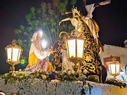
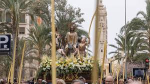
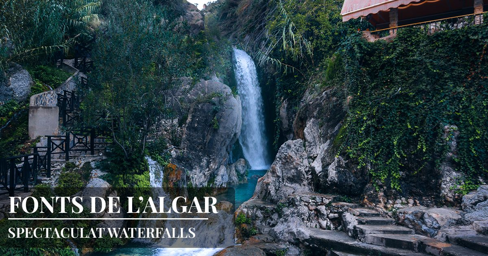
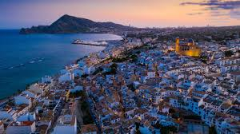
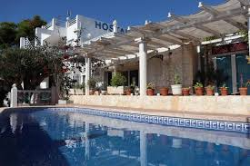
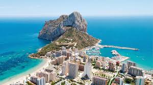
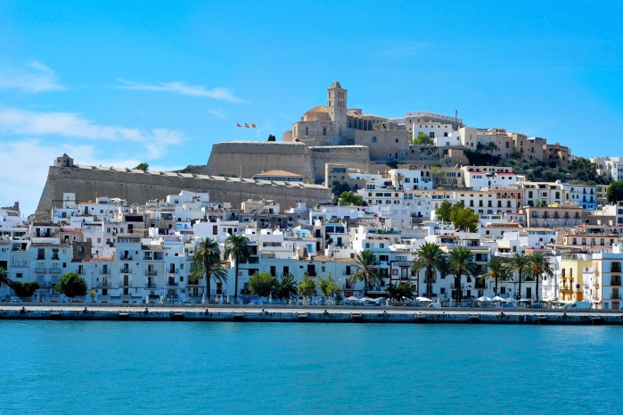

Sábado 19 - Villena
Castillo de Villena (Tienes que decidir si quieres un tour guiado de una hora o si vamos por nuestra cuenta, hay que pagar de una forma u otra unos 4€) + Lampadini


Procesión muy chula. Asistencia obligatoria...
Procesión que le gusta a Celeste, y en consecuencia a mí. Asistencia voluntariamente obligatoria
Castillo de Villena (Tienes que decidir si quieres un tour guiado de una hora o si vamos por nuestra cuenta, hay que pagar de una forma u otra unos 4€) + Lampadini
Cascada de Callosa de Ensarriá [Fonts d'Algar] (Salimos a las 7:00, llegamos a las 8:00 y no se, fotos y tal supongo xd (seguramente este concurrido). Sobre las 11:00h nos vamos a Altea)
Altea (LLegamos por ejemplo sobre las 12:00h o antes, depende de cuando nos vayamos de Fonts d'Algar, lo vemos, paseito, fotitos, comemos (tienes que elegir tu el sitio) y besitos. Sobre las 17:30h nos vamos a Calpe)
Calpe (LLegamos sobre las 18:00, entramos al hostal y ya decidimos que hacemos, podemos subir el peñon que hay al lado, o cenar, o dormir)
Calpe (Nos levantamos, desayunamos, si no hemos subido el peñon aún podemos hacerlo y vamos para Denia. También me gustaría visitar una cascada que vi que había por ahí que era con una salida de agua horizontal, peroooooooo, no la encuentro xd (Ya no pongo horas porque no tenemos ningun compromiso y ya veremos lo que nos apetece hacer))
Denia (Te dejo que decidas tu que hacemos amor (jajaj a lo mejor ni vamos, Tu decides))
Visitaremos un hermoso Ikea, lleno de misterios y secretos por descubrir en el Perú español.